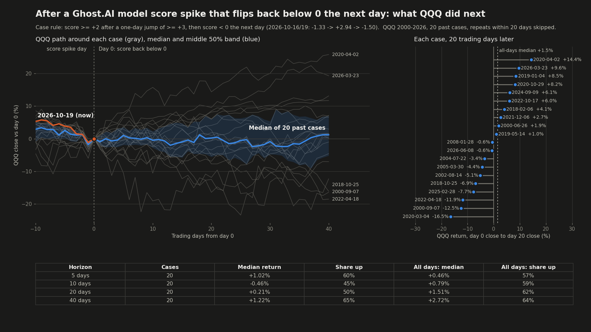

이번처럼 GA가 하루 만에 0미만으로 되돌아왔을 때, 그 뒤 나스닥 방향은?
· Ghost.AI 데일리 리포트
👻 매일 시그널과 히스토리를 홈페이지에서 한눈에 → www.ghostai.co.kr
회원 페이지 안내 — 회원 가입하시면 커버리지 전 종목의 원본 시그널과 분석 레포트를 매일 확인하실 수 있습니다. 회원 페이지는 블로그·유튜브보다 먼저 업데이트됩니다. 지금 베타 회원을 받고 있으며, 이메일과 필명만으로 가입하실 수 있고 서비스 사용료는 받지 않습니다. 이메일 확인 후 바로 이용하실 수 있습니다.
10월 16일 TQQQ 전략에 매도 신호가 나온 다음 날, AI 모델 지표가 하루 만에 0 아래로 되돌아왔습니다. 2000년 이후 같은 모양이 나온 20건을 찾아 그 뒤 나스닥 100(QQQ)의 흐름을 확인했습니다. 20거래일 뒤 결과는 10건 상승, 10건 하락으로 반반이었습니다.
10월 16일(금) 나스닥 100(QQQ)이 2.50% 내리자 지표는 하루 만에 -1.33에서 +2.94로 올랐고, 이날 장 마감 기준으로 TQQQ 전략에 매도 신호가 나왔습니다. 전략은 10월 19일(월) 시가에 TQQQ를 매도했습니다. 그런데 같은 날 QQQ가 1.21% 오르면서 지표는 다시 -1.50으로 내려왔습니다.
지표가 하루 만에 원래 자리로 돌아왔으니 곧 반등하는 것이 아니냐는 질문이 나올 수 있습니다. 그래서 과거에 같은 모양이 나왔던 때를 찾아, 그 뒤 QQQ가 어떻게 움직였는지 확인했습니다.
사례를 고른 기준
- 지표가 하루에 3 넘게 올라 +2 이상이 되고, 바로 다음 날 0 아래로 내려온 경우
- 2000년 3월부터 2026년 10월까지 QQQ에서 20건 (20거래일 안에 다시 나온 경우는 한 건으로 셌습니다)
- 수익률은 지표가 0 아래로 내려온 날(이번으로 치면 10월 19일)의 QQQ 종가를 기준으로 계산했습니다

| 기간 | 같은 모양 20건: 중간값 | 같은 모양 20건: 오른 비율 | 전체 거래일: 중간값 | 전체 거래일: 오른 비율 |
|---|---|---|---|---|
| 5거래일 뒤 | +1.02% | 60% | +0.46% | 57% |
| 10거래일 뒤 | -0.46% | 45% | +0.79% | 59% |
| 20거래일 뒤 | +0.21% | 50% | +1.51% | 62% |
| 40거래일 뒤 | +1.22% | 65% | +2.72% | 64% |
결과는 반반이었습니다. 20거래일 뒤를 보면 20건 중 10건이 올랐고 10건이 내렸습니다. 범위는 -16.5%에서 +14.4%까지로 넓었고, 10~20거래일 뒤 중간값은 전체 거래일의 중간값보다 낮았습니다.
크게 내린 사례는 2020년 3월 4일(-16.5%, 코로나19 급락), 2000년 9월 7일(-12.5%, 닷컴 버블 붕괴), 2022년 4월 18일(-11.9%, 2022년 약세장)입니다. 크게 오른 사례는 2020년 4월 2일(+14.4%), 2026년 3월 23일(+9.6%), 2019년 1월 4일(+8.5%)로, 모두 급락 뒤 반등이 시작되던 때였습니다.
다만 당시에는 두 경우를 구분하기 어려웠습니다. 2020년 3월 4일과 2026년 3월 23일은 둘 다 QQQ가 최근 고점보다 7~8% 낮은 상태였지만, 20거래일 뒤 결과는 -16.5%와 +9.6%로 정반대였습니다. 이번 10월 19일 QQQ는 10월 6일 고점보다 5.4% 낮습니다.
정리하면, 지표가 하루 만에 되돌아온 것만으로는 그 뒤의 방향을 알 수 없었습니다. 그 뒤의 흐름은 이 하루의 움직임보다 당시 시장이 하락장 한가운데였는지, 급락 뒤 반등 국면이었는지에 더 크게 좌우됐습니다. 전략은 하루 반전과 상관없이 다음 매수 신호가 나올 때까지 현금을 보유합니다.
과거 20건의 결과이며, 앞으로도 같은 결과가 나온다는 보장은 없습니다. 수익률은 QQQ(1배) 기준이고, TQQQ는 하루 등락이 QQQ의 3배라 같은 기간 변동 폭이 더 큽니다. 이 특집은 정보 제공 목적이며 투자 권유가 아닙니다. 전략의 매매는 모델의 가상 트랙입니다.